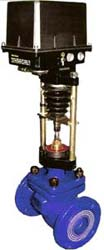
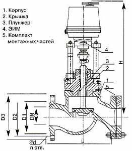

- Продукция
- Запорная арматура
- Клапан запорно-регулирующий 25ч945п
Клапан запорно-регулирующий 25ч945п
Клапан запорно-регулирующий односедельный фланцевый 25ч945п предназначен для использования на тепловых станциях, котельных, центральных и индивидуальных тепловых пунктах для автоматического регулирования тепловых процессов путем автоматического изменения пропускной способности, а также для работы в качестве запорного устройства.
- В котельных клапан применяется:
- Для регулирования подачи воды в деаэратор
- Для регулирования питания котла водой
- Для регулирования температуры сетевой воды и воды в системе горячего водоснабжения
Клапан является регулирующим и запорным органом одновременно, что исключает необходимость установки запорных устройств до и после регулирующей арматуры в технологических линиях. Уплотнение в затворе "металл по металлу" позволяет поднять температуру теплоносителя до 225°С и устраняет недостатки классически применяемых мягких уплотнений.
Технические характеристики клапанов 25ч945п
- Температура окружающей среды: от -25° до +40°С
- Температура рабочей среды: до 225°С
- Рабочая среда - вода, перегретый пар, воздух и другие, жидкие и газообразные среды, нейтральные к материалам деталей, соприкасающихся со средой
- Средняя наработка на отказ - 10000 часов
- Средний ресурс - 80000 часов
- Средний срок службы - 10 лет
Пропускная способность запорно-регулирующий клапанов
| Номинальный диаметр DN, мм |
15 | 20 | 25 | 32 | 40 | 50 | 65 | 80 | 100 | 125 |
|---|---|---|---|---|---|---|---|---|---|---|
| Условная пропускная способность KVу, м3/ч |
0,10 | 1,6 | 1,6 | 6,3 | 10 | 16 | 25 | 40 | 63 | 100 |
| 0,16 | 2,5 | 2,5 | 10 | 16 | 25 | 40 | 63 | 100 | 160 | |
| 0,25 | 4,0 | 4,0 | 16 | 25 | 40 | 63 | 100 | 160 | 250 | |
| 0,4 | 6,3 | 6,3 | ||||||||
| 0,6 | 10 | |||||||||
| 1,0 | ||||||||||
| 1,6 | ||||||||||
| 2,5 | ||||||||||
| 3,2 | ||||||||||
|
Относительная протечка в затворе, % от KVу, не более |
0,001 | |||||||||
| Масса, кг | 12 | 18 | 20 | 24 | 26 | 28 | 32 | 33 | 48 | 78 |
Материалы основных деталей
- Корпус - чугун СЧ20
- Крышка - чугун СЧ20
- Плунжер - сталь 12Х18Н10Т
- Седло - ЛС59-1
- Сальниковая набивка - фторопласт Ф4
Звоните по телефону (495) XXX-XX-XX
Также мы поставляем регулирующие клапаны 25ч940нж, 25ч943нж, 25с947нж, приводы к ним, регуляторы температуры и давления для управления клапанами.